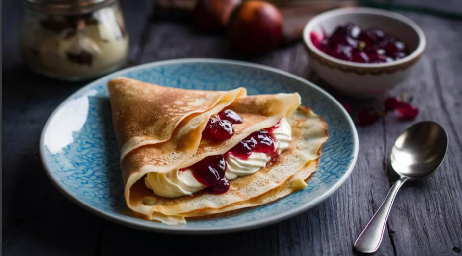

Crepes recipe

Description:
Voici la meilleure recette de pâte à crêpes
Ingredients
Liste des ingrédients pour 15 crêpes
- 300g de farine
- 3 cuillères à soupe de sucre
- 2 cuillères à soupe d'huile
- 50g de beurre
- 5cl de rhum
- 3 oeuf entiers
- 60 cl de lait
Etapes pour réaliser la recette
- Mettre la farine dans une terrine et former un puits.
- Y déposer les oeufs entiers, le sucre, l'huile et le beurre.
- Mélanger délicatement avec un fouet en ajoutant au fur et à mesure le lait. La pâte ainsi obtenue doit avoir une consistance d'un liquide légèrement épais.
- Parfumer de rhum.
- Faire chauffer une poêle antiadhésive et la huiler très légèrement à l'aide d'un papier Essuie-tout. Y verser une louche de pâte, la répartir dans la poêle puis attendre qu'elle soit cuite d'un côté avant de la retourner. Cuire ainsi toutes les crêpes à feu doux.
Home page